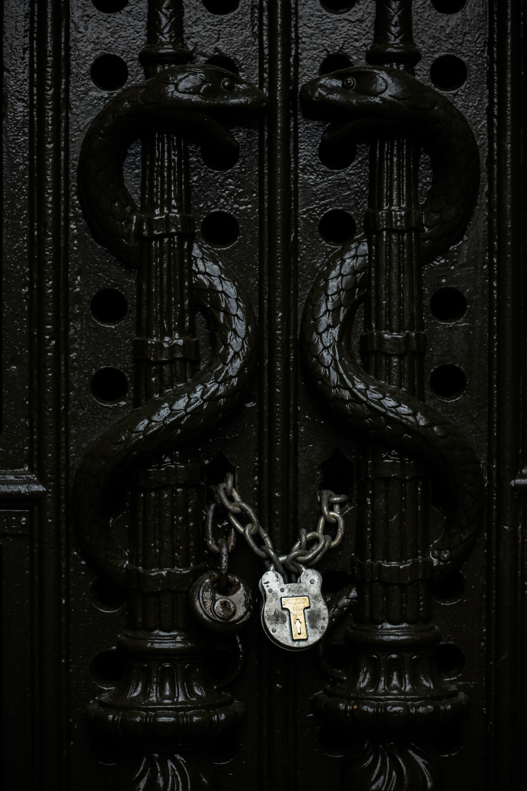

Slytherin
Slytherin is one of the four Houses at Hogwarts School of Witchcraft and Wizardry, founded by Salazar Slytherin. In establishing the house, Salazar instructed the Sorting Hat to pick students who had a few particular characteristics he most valued. Those characteristics include cunning, resourcefulness, and ambition. Many Slytherin students tend to clique together, often acquiring leaders, which further exemplifies Slytherin's ambitious qualities. Examples of these include Draco Malfoy’s Gang and the Death Eaters.
The founder highly valued and favoured pure-blood students and the Sorting Hat admitted that it can be a factor when being sorted. Students of any blood status can now be placed in the house. However, a Muggle-Born student from that house is considered to be quite rare.